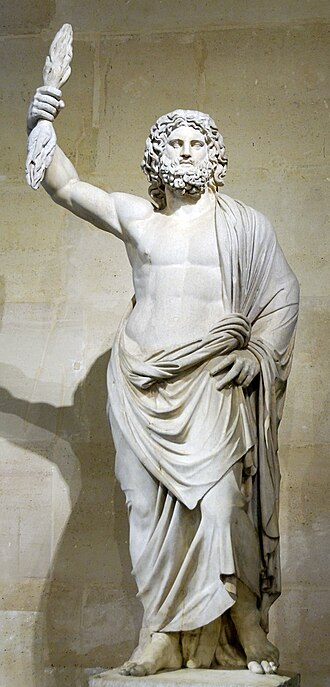
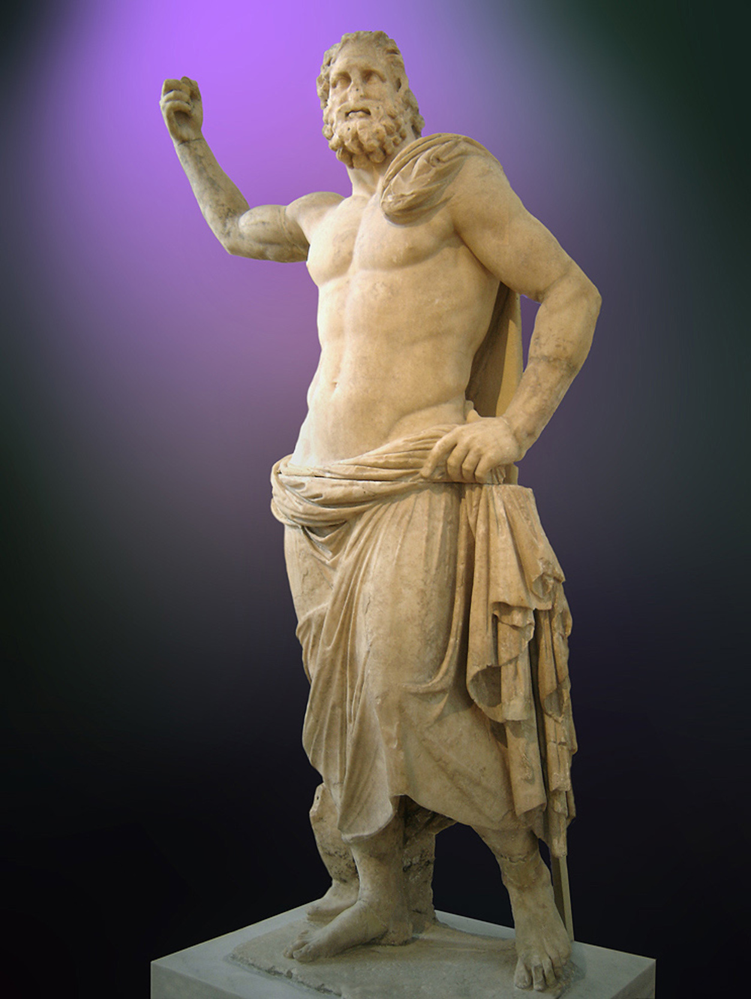
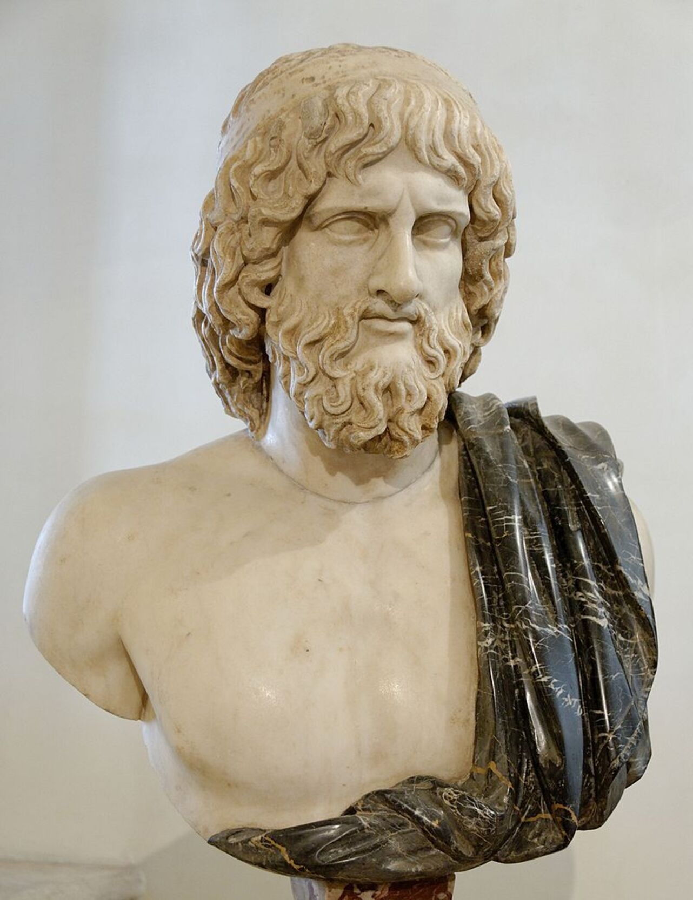
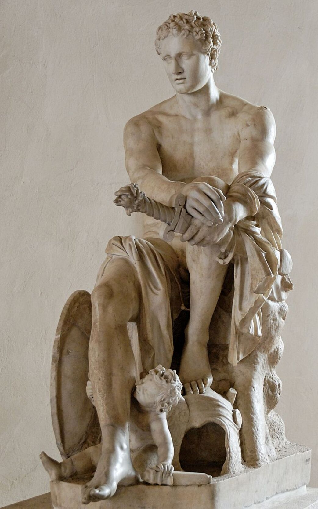
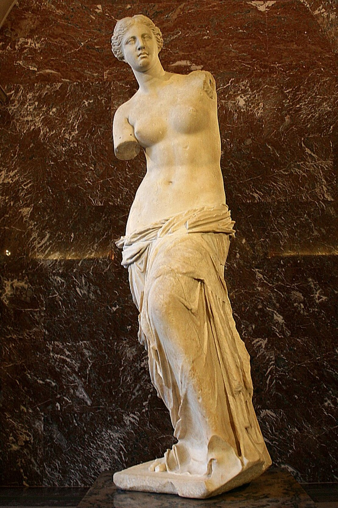
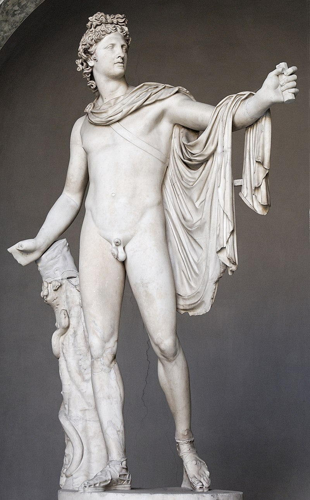

Conheça a Mitologia Grega
A mitologia grega é um vasto conjunto de histórias e lendas que compõem a rica tradição cultural da Grécia antiga. Essas narrativas envolvem uma variedade de deuses, deusas, heróis e criaturas mitológicas, refletindo as crenças, valores e explicações sobre o mundo dos antigos gregos.
Zeus - Ζεύς
Poseidon - Ποσειδῶν
Hades - Ἅιδης
Ares - Ἄρης
Afrodite - Αφροδίτη
Apolo - Ἀπόλλων
